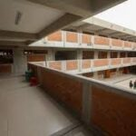
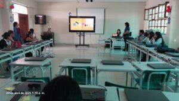
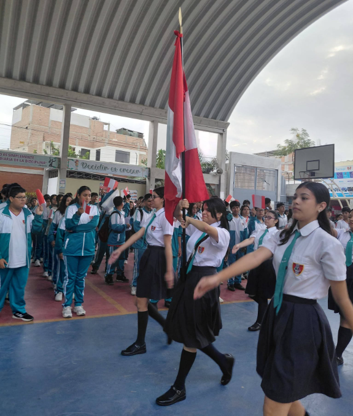
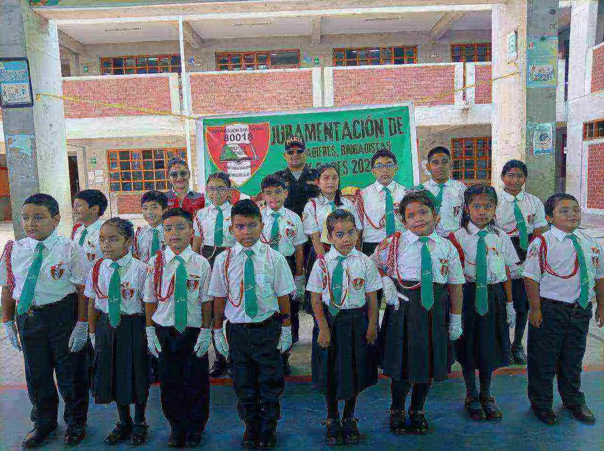
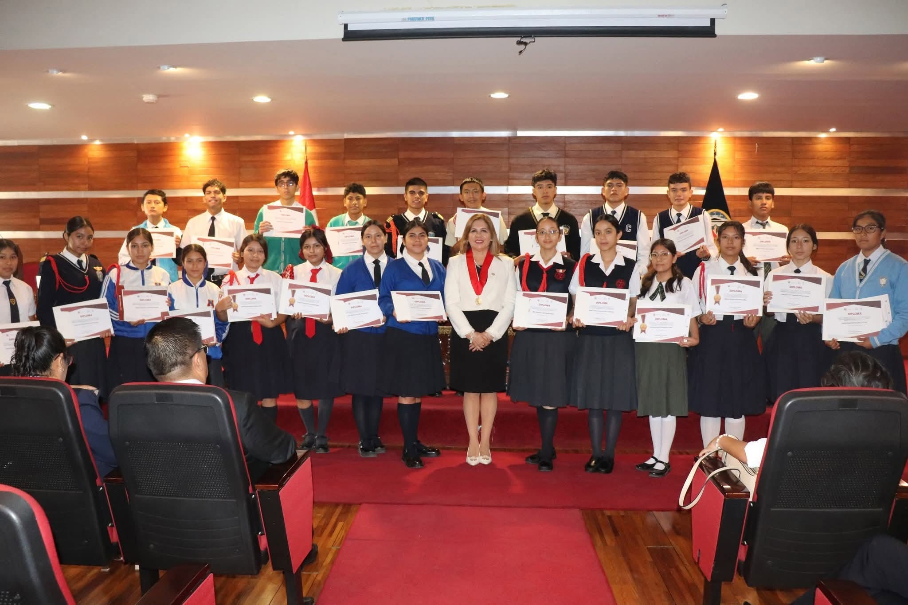
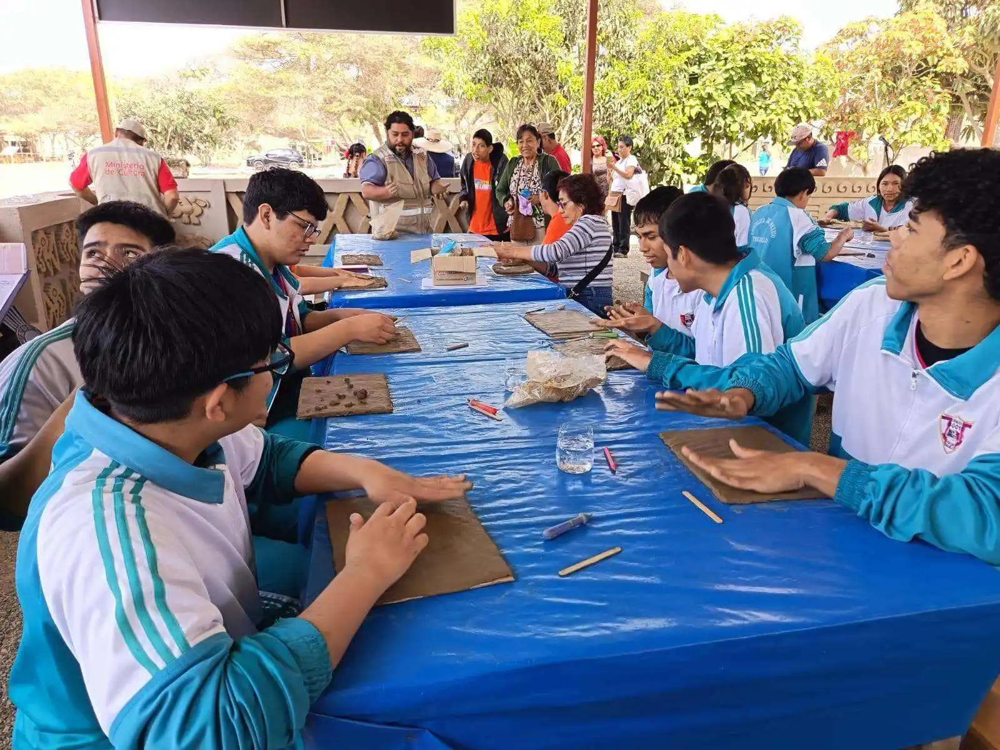
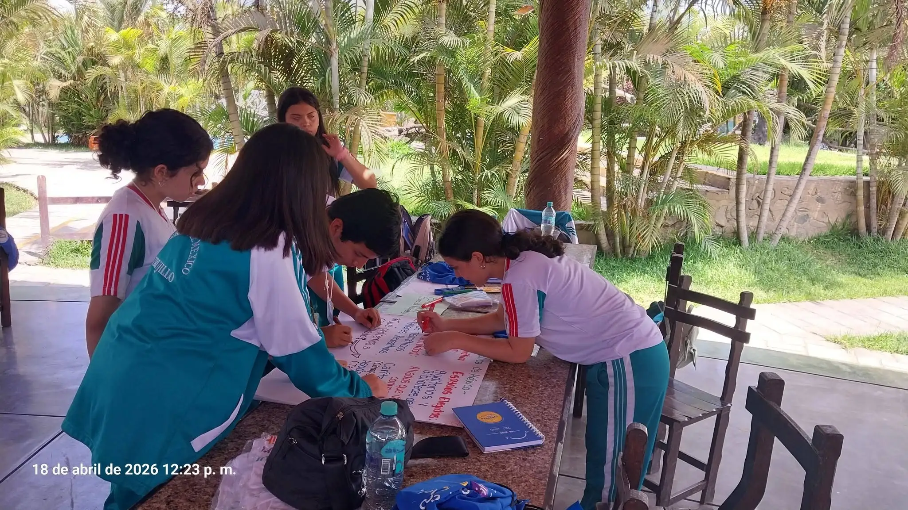

Explora nuestra propuesta formativa en la Urb. San Salvador, Trujillo. Combinamos el rigor del Currículo Nacional con infraestructura moderna, herramientas digitales transversales y un calendario activo de vivencias culturales y cívicas.

Contamos con una infraestructura recientemente reconstruida, con amplios pabellones de tres niveles diseñados bajo normativas pedagógicas vigentes para brindar ventilación, iluminación y seguridad total a nuestros estudiantes de primaria y secundaria.

Equipada con un módulo moderno de laptops funcionales que no se limitan a la informática básica. Esta sala está integrada en el horario regular de Secundaria, sirviendo como soporte tecnológico transversal para dinamizar las sesiones de aprendizaje e investigación de diversas áreas curriculares.
Nuestros niños complementan las competencias del CNEB participando activamente en talleres integrados de introducción al cómputo, nociones básicas del idioma inglés y talleres de danzas folclóricas orientados a valorar la riqueza intercultural peruana.
Un espacio emblemático del plantel que estimula la inteligencia musical, el trabajo colaborativo y la disciplina. Nuestra prestigiosa Banda de Músicos Institucional representa con orgullo al colegio en los eventos competitivos y cívicos más importantes de la provincia.
Testimonio visual y motivador de las actividades que consolidan el aprendizaje significativo, el civismo y los lazos de confraternidad en Trujillo.

Participación patriótica en desfiles públicos, fortaleciendo el respeto por nuestros héroes y símbolos patrios con alto sentido cívico.

Estudiantes de Primaria reunidos en formación oficial para entonar con fervor el Himno Nacional, el Himno a Trujillo y el de nuestra institución.

Premiación a estudiantes destacados en olimpiadas de matemáticas, concursos de comprensión lectora, debates escolares y méritos del año lectivo.

Aprendizaje vivencial en el curso de historia, donde los alumnos visitan el complejo Chan Chan y moldean figuras de arcilla rescatando la cultura de Mansiche.

Variedad de actividades de esparcimiento que incluyen salidas integradas de campo en abril, paseos por el Día de la Juventud y los tradicionales viajes campestres de fin de año para las promociones.